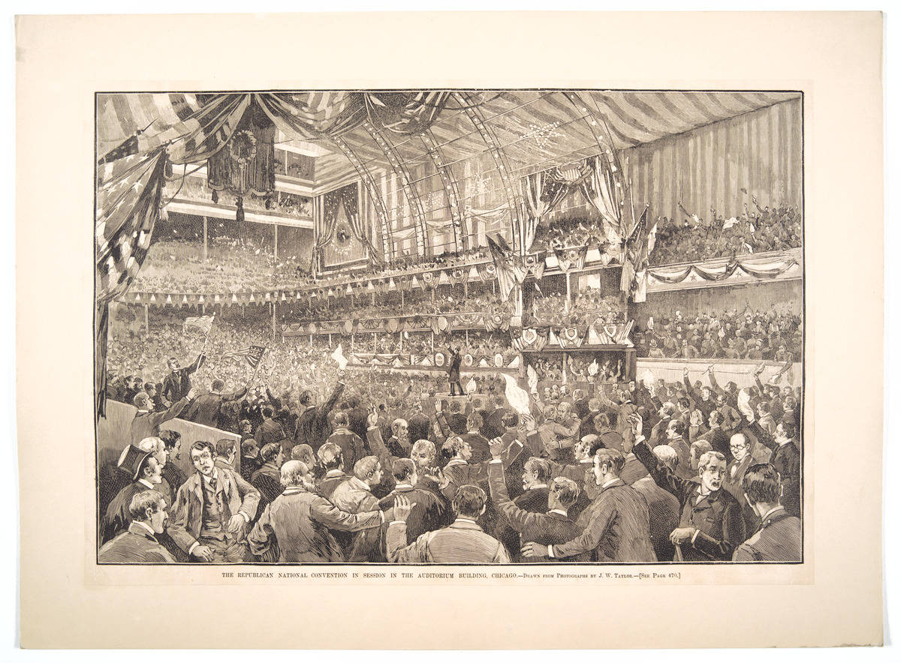
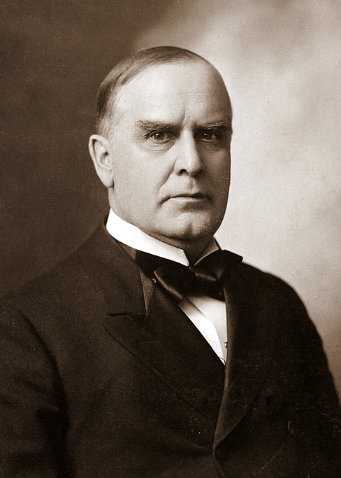

<template id="scene-04-1888-moment-template">
  <div data-composition-id="scene-04-1888-moment" data-width="1920" data-height="1080" style="position:absolute; top:0; left:0; width:1920px; height:1080px; overflow:hidden; background-color:#0E0B08;">
    <style>
      @font-face {
        font-family: "Source Serif 4";
        src: url("../assets/fonts/SourceSerif4-Regular.woff2") format("woff2");
        font-weight: 400; font-style: normal;
      }
      @font-face {
        font-family: "Playfair Display";
        src: url("../assets/fonts/PlayfairDisplay-Bold.woff2") format("woff2");
        font-weight: 700; font-style: normal;
      }
      @font-face {
        font-family: "Playfair Display";
        src: url("../assets/fonts/PlayfairDisplay-Black.woff2") format("woff2");
        font-weight: 900; font-style: normal;
      }
      @font-face {
        font-family: "Roboto Mono";
        src: url("../assets/fonts/RobotoMono-Regular.woff2") format("woff2");
        font-weight: 400 700; font-style: normal;
      }
      .s4-stage {
        position: absolute; inset: 0;
        background-color: #0E0B08;
        font-family: "Source Serif 4", serif;
        color: #E8DEC8;
        overflow: hidden;
      }

      /* C3: Full-bleed convention photo capped at height:880 (caption safe-zone) */
      #s4-convention-img {
        position: absolute;
        top: 0; left: 0;
        width: 100%; height: 880px;
        object-fit: cover;
        opacity: 0; z-index: 3;
        filter: sepia(0.4) contrast(1.0) brightness(0.45) saturate(0.7);
      }
      /* Vignette darkens convention photo edges so titles read */
      #s4-convention-vignette {
        position: absolute;
        top: 0; left: 0;
        width: 100%; height: 880px;
        opacity: 0; z-index: 4;
        background: radial-gradient(
          ellipse at center,
          rgba(14, 11, 8, 0.0) 30%,
          rgba(14, 11, 8, 0.65) 80%,
          rgba(14, 11, 8, 0.92) 100%
        );
      }

      /* ─── PHASE 1: RNC opens — date stamp + Sherman intro ─── */
      #s4-date-stamp {
        position: absolute;
        top: 140px; left: 0;
        width: 100%; text-align: center;
        font-family: "Roboto Mono", monospace;
        font-size: 28px; letter-spacing: 0.5em;
        text-transform: uppercase;
        color: #C87533; opacity: 0; z-index: 11;
      }
      #s4-rnc-headline {
        position: absolute;
        top: 200px; left: 0;
        width: 100%; text-align: center;
        font-family: "Playfair Display", serif;
        font-weight: 900; font-size: 96px;
        line-height: 1.05; letter-spacing: -0.02em;
        color: #E8DEC8; opacity: 0; z-index: 11;
      }
      #s4-rnc-headline .accent { color: #C87533; }

      #s4-sherman-card {
        position: absolute;
        top: 460px; left: 50%;
        /* T1: no CSS transform — GSAP centers via xPercent */
        width: 900px;
        text-align: center;
        opacity: 0; z-index: 12;
      }
      #s4-sherman-card .label {
        font-family: "Roboto Mono", monospace;
        font-size: 22px; letter-spacing: 0.3em;
        text-transform: uppercase;
        color: #9A8E76;
        margin-bottom: 22px;
      }
      #s4-sherman-card .name {
        font-family: "Playfair Display", serif;
        font-weight: 900; font-size: 96px;
        letter-spacing: -0.02em;
        color: #E8DEC8;
        margin-bottom: 28px;
      }
      #s4-sherman-card .meta {
        font-family: "Source Serif 4", serif;
        font-size: 32px;
        line-height: 1.4;
        color: #D4B679;
      }
      #s4-sherman-card .meta .strike {
        color: #C03A2C;
        font-style: italic;
      }

      /* ─── PHASE 2: DEADLOCK — ballot tally ─── */
      #s4-deadlock {
        position: absolute;
        top: 180px; left: 96px;
        width: 1728px; height: 660px;
        z-index: 12; opacity: 0;
      }
      .s4-deadlock-header {
        text-align: center;
        font-family: "Roboto Mono", monospace;
        font-size: 24px; letter-spacing: 0.5em;
        text-transform: uppercase;
        color: #9A8E76;
        margin-bottom: 18px;
        opacity: 0;
      }
      .s4-deadlock-headline {
        text-align: center;
        font-family: "Playfair Display", serif;
        font-weight: 900; font-size: 88px;
        letter-spacing: -0.02em;
        color: #E8DEC8;
        margin-bottom: 50px;
        opacity: 0;
      }
      .s4-deadlock-headline .accent { color: #C03A2C; font-style: italic; }

      .s4-ballot-grid {
        display: grid;
        grid-template-columns: repeat(6, 1fr);
        gap: 24px;
        margin-bottom: 56px;
      }
      .s4-ballot {
        opacity: 0;
        text-align: center;
        padding: 24px 12px;
        border-top: 2px solid #3A2E20;
        border-bottom: 1px solid #3A2E20;
        background: rgba(232, 222, 200, 0.02);
      }
      .s4-ballot .num {
        font-family: "Roboto Mono", monospace;
        font-size: 24px; letter-spacing: 0.2em;
        color: #9A8E76;
        text-transform: uppercase;
        margin-bottom: 14px;
      }
      .s4-ballot .vote {
        font-family: "Playfair Display", serif;
        font-weight: 900; font-size: 48px;
        line-height: 1;
        color: #C03A2C;
        font-variant-numeric: tabular-nums;
      }
      .s4-ballot .label {
        font-family: "Source Serif 4", serif;
        font-size: 28px;
        font-style: italic;
        color: #9A8E76;
        margin-top: 10px;
      }

      #s4-harrison-card {
        opacity: 0;
        text-align: center;
        padding: 30px 20px;
        border-top: 1px solid #C87533;
        border-bottom: 1px solid #C87533;
      }
      #s4-harrison-card .who {
        font-family: "Roboto Mono", monospace;
        font-size: 24px; letter-spacing: 0.3em;
        text-transform: uppercase;
        color: #C87533;
        margin-bottom: 16px;
      }
      #s4-harrison-card .name {
        font-family: "Playfair Display", serif;
        font-weight: 900; font-size: 56px;
        letter-spacing: -0.015em;
        color: #E8DEC8;
        margin-bottom: 14px;
      }
      #s4-harrison-card .tag {
        font-family: "Source Serif 4", serif;
        font-style: italic;
        font-size: 26px;
        color: #D4B679;
      }

      /* ─── PHASE 3: McKINLEY APPROACHED + REFUSAL ─── */
      #s4-mckinley-stage {
        position: absolute;
        top: 0; left: 0;
        width: 100%; height: 100%;
        z-index: 12; opacity: 0;
      }
      #s4-mckinley-portrait {
        position: absolute;
        top: 100px; left: 50%;
        /* T1: no CSS transform; T2: xPercent in tween */
        width: 380px; height: 500px;
        object-fit: cover;
        opacity: 0;
        filter: sepia(0.3) contrast(1.05) brightness(0.88);
        border: 2px solid #C87533;
        box-shadow: 0 20px 60px rgba(0, 0, 0, 0.6);
      }
      #s4-mckinley-meta {
        position: absolute;
        top: 640px; left: 0;
        width: 100%; text-align: center;
        font-family: "Roboto Mono", monospace;
        font-size: 22px; letter-spacing: 0.3em;
        text-transform: uppercase;
        color: #C87533;
        opacity: 0;
      }
      #s4-mckinley-name {
        position: absolute;
        top: 690px; left: 0;
        width: 100%; text-align: center;
        font-family: "Playfair Display", serif;
        font-weight: 900; font-size: 64px;
        letter-spacing: -0.02em;
        color: #E8DEC8;
        opacity: 0;
      }
      #s4-mckinley-context {
        position: absolute;
        top: 790px; left: 96px;
        width: 1728px; text-align: center;
        font-family: "Source Serif 4", serif;
        font-style: italic; font-size: 28px;
        line-height: 1.35;
        color: #D4B679;
        opacity: 0;
      }
      #s4-mckinley-context .accent { color: #C87533; font-style: normal; font-weight: 700; }

      /* The refusal — fills the frame as a punch */
      #s4-refusal {
        position: absolute;
        top: 0; left: 0;
        width: 100%; height: 100%;
        display: flex;
        flex-direction: column;
        align-items: center;
        justify-content: center;
        text-align: center;
        opacity: 0; z-index: 14;
      }
      #s4-refusal .word {
        font-family: "Playfair Display", serif;
        font-weight: 900; font-size: 280px;
        letter-spacing: -0.04em;
        line-height: 0.9;
        color: #C03A2C;
      }
      #s4-refusal .reason {
        margin-top: 60px;
        font-family: "Source Serif 4", serif;
        font-style: italic; font-size: 38px;
        line-height: 1.35;
        color: #E8DEC8;
        max-width: 1500px;
      }
      #s4-refusal .reason .accent { color: #C87533; font-weight: 700; font-style: normal; }

      /* ─── PHASE 4: HANNA WATCHING — the moment ─── */
      #s4-watching {
        position: absolute;
        top: 0; left: 0;
        width: 100%; height: 100%;
        z-index: 13; opacity: 0;
      }
      #s4-watching-quote {
        position: absolute;
        top: 280px; left: 96px;
        width: 1728px; text-align: center;
        font-family: "Playfair Display", serif;
        font-weight: 700; font-size: 64px;
        line-height: 1.3; letter-spacing: -0.015em;
        color: #E8DEC8;
        opacity: 0;
      }
      #s4-watching-quote .line {
        display: block;
        margin-top: 26px;
        opacity: 0;
      }
      #s4-watching-quote .accent {
        color: #C87533;
        font-style: italic;
      }

      #s4-industrialist {
        position: absolute;
        top: 700px; left: 96px;
        width: 1728px; text-align: center;
        font-family: "Playfair Display", serif;
        font-weight: 900; font-size: 88px;
        font-style: italic;
        letter-spacing: -0.02em;
        color: #C87533;
        opacity: 0;
      }

      /* ─── PHASE 5: AFTERMATH — refusal/remembered + outcomes ─── */
      #s4-aftermath {
        position: absolute;
        top: 0; left: 0;
        width: 100%; height: 100%;
        z-index: 12; opacity: 0;
      }
      #s4-pivot-line {
        position: absolute;
        top: 200px; left: 96px;
        width: 1728px; text-align: center;
        font-family: "Playfair Display", serif;
        font-weight: 900; font-size: 72px;
        line-height: 1.1;
        letter-spacing: -0.02em;
        color: #E8DEC8;
        opacity: 0;
        white-space: nowrap;
      }
      #s4-pivot-line .left  { color: #C03A2C; font-style: italic; }
      #s4-pivot-line .right { color: #C87533; font-style: italic; }
      #s4-pivot-line .ampersand { color: #9A8E76; margin: 0 32px; font-weight: 400; font-style: normal; }

      #s4-outcomes {
        position: absolute;
        top: 400px; left: 96px;
        width: 1728px;
        z-index: 12;
      }
      .s4-outcome-row {
        display: grid;
        grid-template-columns: 360px 1fr;
        align-items: baseline;
        gap: 50px;
        padding: 16px 40px;
        border-bottom: 1px solid #3A2E20;
        opacity: 0;
      }
      .s4-outcome-row .who {
        font-family: "Roboto Mono", monospace;
        font-size: 22px; letter-spacing: 0.25em;
        text-transform: uppercase;
        color: #C87533;
      }
      .s4-outcome-row .what {
        font-family: "Playfair Display", serif;
        font-weight: 700; font-size: 42px;
        line-height: 1.2;
        color: #E8DEC8;
      }
      .s4-outcome-row .what .accent {
        color: #D4B679;
        font-style: italic;
      }

      /* The closing decision */
      #s4-decision {
        position: absolute;
        top: 600px; left: 96px;
        /* M10/R1: top:600 + 80px font + ~80px line2 + line-height ≈ y=820 max — safe-zone respected */
        width: 1728px; text-align: center;
        font-family: "Playfair Display", serif;
        font-weight: 900; font-size: 64px;
        line-height: 1.2;
        letter-spacing: -0.02em;
        color: #C87533;
        opacity: 0;
      }
      #s4-decision .line2 {
        display: block;
        margin-top: 24px;
        font-style: italic;
        font-size: 48px;
        color: #E8DEC8;
        opacity: 0;
      }
    </style>

    <div class="s4-stage">

      <!-- Background convention photo (Phase 1+2 backdrop) -->
      
      <div id="s4-convention-vignette"></div>

      <!-- PHASE 1: RNC opens -->
      <div id="s4-date-stamp">June 19 &#160;·&#160; 1888 &#160;·&#160; Chicago</div>
      <div id="s4-rnc-headline">
        Republican <span class="accent">National Convention</span>
      </div>
      <div id="s4-sherman-card">
        <div class="label">Hanna's candidate</div>
        <div class="name">John Sherman</div>
        <div class="meta">
          Senator from Ohio. 65 years old.<br>
          Brilliant. Deeply respected.<br>
          <span class="strike">Could not win.</span>
        </div>
      </div>

      <!-- PHASE 2: DEADLOCK -->
      <div id="s4-deadlock">
        <div class="s4-deadlock-header">Through the first six ballots</div>
        <div class="s4-deadlock-headline">
          <span class="accent">Deadlock.</span>
        </div>
        <div class="s4-ballot-grid">
          <div class="s4-ballot" data-ballot="1"><div class="num">Ballot 1</div><div class="vote">&lt; 300</div><div class="label">no winner</div></div>
          <div class="s4-ballot" data-ballot="2"><div class="num">Ballot 2</div><div class="vote">&lt; 300</div><div class="label">no winner</div></div>
          <div class="s4-ballot" data-ballot="3"><div class="num">Ballot 3</div><div class="vote">&lt; 300</div><div class="label">no winner</div></div>
          <div class="s4-ballot" data-ballot="4"><div class="num">Ballot 4</div><div class="vote">&lt; 300</div><div class="label">no winner</div></div>
          <div class="s4-ballot" data-ballot="5"><div class="num">Ballot 5</div><div class="vote">&lt; 300</div><div class="label">no winner</div></div>
          <div class="s4-ballot" data-ballot="6"><div class="num">Ballot 6</div><div class="vote">&lt; 300</div><div class="label">no winner</div></div>
        </div>
        <div id="s4-harrison-card">
          <div class="who">Hovering in 2nd place</div>
          <div class="name">Benjamin Harrison</div>
          <div class="tag">Indiana &#160;·&#160; Civil War general &#160;·&#160; grandson of a former president</div>
        </div>
      </div>

      <!-- PHASE 3: McKINLEY -->
      <div id="s4-mckinley-stage">
        
        <div id="s4-mckinley-meta">45 years old &#160;·&#160; Canton, Ohio &#160;·&#160; Congressman</div>
        <div id="s4-mckinley-name">William McKinley</div>
        <div id="s4-mckinley-context">
          Sherman's <span class="accent">floor manager</span>.
          Pledged to Sherman in public.
          Approached by a delegation that wanted his name placed in nomination.
        </div>
      </div>

      <!-- The refusal — full-frame punch -->
      <div id="s4-refusal">
        <div class="word">No.</div>
        <div class="reason">
          Without pausing.
          Without consulting his wife, his advisers, or his own ambition.
          Bound by a public pledge to a man who <span class="accent">could not win.</span>
        </div>
      </div>

      <!-- PHASE 4: HANNA WATCHING -->
      <div id="s4-watching">
        <div id="s4-watching-quote">
          <span class="line">Hanna was watching from across the floor.</span>
          <span class="line">He saw a man turn down <span class="accent">the presidency of the United States</span></span>
          <span class="line">because he had given his word to a colleague who could not win.</span>
        </div>
        <div id="s4-industrialist">An industrialist remembers a man like that.</div>
      </div>

      <!-- PHASE 5: AFTERMATH -->
      <div id="s4-aftermath">
        <div id="s4-pivot-line">
          <span class="left">McKinley refused.</span>
          <span class="ampersand">·</span>
          <span class="right">Hanna remembered.</span>
        </div>

        <div id="s4-outcomes">
          <div class="s4-outcome-row" data-out="1">
            <div class="who">Harrison</div>
            <div class="what">Won the nomination on the <span class="accent">8th ballot</span>. Won the presidency in November.</div>
          </div>
          <div class="s4-outcome-row" data-out="2">
            <div class="who">Sherman</div>
            <div class="what">Went home.</div>
          </div>
          <div class="s4-outcome-row" data-out="3">
            <div class="who">McKinley</div>
            <div class="what">Returned to his House seat.</div>
          </div>
          <div class="s4-outcome-row" data-out="4">
            <div class="who">Hanna</div>
            <div class="what">Returned to Cleveland with a <span class="accent">decision in his pocket.</span></div>
          </div>
        </div>

        <div id="s4-decision">
          The next Republican from Ohio in the White House would be <span style="color:#C03A2C">William McKinley</span>.
          <span class="line2">And Hanna would put him there.</span>
        </div>
      </div>
    </div>

    <script>
      window.__timelines = window.__timelines || {};
      const tl = gsap.timeline({ paused: true });

      // ═════════════════════════════════════════════════════════════════
      // BEAT MAP — section 04 The 1888 Moment (104.3s)
      // Scene-relative time (parent root: 201.67s offset added by HF runtime)
      // Word anchors verified against new master transcript:
      //  +0.22s  "Republican National Convention"   — RNC HEADLINE
      //  +2.37s  "Chicago"                           — date+location stamp
      //  +6.55s  "delegate from Ohio"
      //  +8.77s  "John Sherman"                      — SHERMAN CARD lands
      // +12.11s  "65"                                — meta line
      // +18.25s  "convention deadlocked"             — DEADLOCK phase begins
      // +22.72s  "300 votes"                         — ballot grid lands
      // +25.61s  "Benjamin Harrison"                 — HARRISON CARD
      // +35.95s  "alternative"                       — Phase 2 exit
      // +39.21s  "45 year old"                       — McKINLEY phase begins
      // +42.92s  "William McKinley"                  — McKinley name lands
      // +51.30s  "Sherman's floor manager"           — context line
      // +55.97s  "McKinley said no"                  — REFUSAL slam
      // +57.82s  "without pausing"                   — reason context
      // +67.20s  "public pledge"                     — exit refusal
      // +73-79s  "Hanna was watching... saw the entire exchange"  — WATCHING
      // +79.80s  "given his word"                    — quote line 3
      // +82.42s  "industrialist remembers"           — INDUSTRIALIST landing
      // +84.89s  "McKinley refused"                  — pivot left
      // +85.5s   "Hanna remembered"                  — pivot right
      // +87.21s  "Harrison won"                      — AFTERMATH outcomes
      // +91.37s  "Sherman went home"
      // +93.38s  "back to his House seat"
      // +95.17s  "back to Cleveland"
      // +96.31s  "decision in his pocket"
      // +103.30s "would put him there"               — close
      // ═════════════════════════════════════════════════════════════════

      // ─── PHASE 1: RNC opens (0–17s) ───
      tl.fromTo("#s4-convention-img",
        { opacity: 0, scale: 1.0 },
        { opacity: 0.55, scale: 1.0, duration: 1.0, ease: "power2.out" },
        0.0
      );
      tl.to("#s4-convention-img", { scale: 1.04, duration: 16.0, ease: "none", overwrite: "auto" }, 1.0);
      tl.fromTo("#s4-convention-vignette",
        { opacity: 0 },
        { opacity: 1, duration: 1.0, ease: "power2.out" },
        0.0
      );

      tl.fromTo("#s4-date-stamp",
        { opacity: 0, letterSpacing: "0.8em" },
        { opacity: 1, letterSpacing: "0.5em", duration: 0.9, ease: "power2.out" },
        0.4
      );
      tl.fromTo("#s4-rnc-headline",
        { opacity: 0, y: 30 },
        { opacity: 1, y: 0, duration: 1.0, ease: "power3.out" },
        0.6
      );

      // Sherman card lands at +8.77s ("John Sherman") — T2 xPercent
      // P1: Headline + stamp EXIT before Sherman lands (no co-existence)
      tl.to(["#s4-rnc-headline", "#s4-date-stamp"],
        { opacity: 0, duration: 0.5, ease: "power2.in", overwrite: "auto" },
        6.8
      );
      tl.set(["#s4-rnc-headline", "#s4-date-stamp"], { visibility: "hidden" }, 7.4);

      tl.fromTo("#s4-sherman-card",
        { opacity: 0, xPercent: -50, y: 30 },
        { opacity: 1, xPercent: -50, y: 0, duration: 0.9, ease: "power3.out" },
        7.5
      );

      // Convention backdrop also exits as Phase 1 transitions to deadlock
      tl.to(["#s4-convention-img", "#s4-convention-vignette"],
        { opacity: 0, duration: 0.6, ease: "power2.in", overwrite: "auto" },
        16.5
      );
      tl.set(["#s4-convention-img", "#s4-convention-vignette"], { visibility: "hidden" }, 17.2);
      tl.to("#s4-sherman-card",
        { opacity: 0, duration: 0.6, ease: "power2.in", overwrite: "auto" },
        16.5
      );
      tl.set("#s4-sherman-card", { visibility: "hidden" }, 17.2);

      // ─── PHASE 2: DEADLOCK (17.5–37s) ───
      tl.set("#s4-deadlock", { opacity: 1, visibility: "visible" }, 17.3);

      // Header + headline land on "convention deadlocked" (+18.25s)
      tl.fromTo(".s4-deadlock-header",
        { opacity: 0, y: 12 },
        { opacity: 1, y: 0, duration: 0.7, ease: "power3.out" },
        17.7
      );
      tl.fromTo(".s4-deadlock-headline",
        { opacity: 0, y: 20 },
        { opacity: 1, y: 0, duration: 0.9, ease: "power3.out" },
        18.0
      );

      // 6 ballot stagger lands during "Through six ballots no candidate could break above 300 votes" (~19-23s)
      tl.fromTo('.s4-ballot[data-ballot="1"]', { opacity: 0, y: 16 }, { opacity: 1, y: 0, duration: 0.4, ease: "power3.out" }, 19.5);
      tl.fromTo('.s4-ballot[data-ballot="2"]', { opacity: 0, y: 16 }, { opacity: 1, y: 0, duration: 0.4, ease: "power3.out" }, 20.0);
      tl.fromTo('.s4-ballot[data-ballot="3"]', { opacity: 0, y: 16 }, { opacity: 1, y: 0, duration: 0.4, ease: "power3.out" }, 20.5);
      tl.fromTo('.s4-ballot[data-ballot="4"]', { opacity: 0, y: 16 }, { opacity: 1, y: 0, duration: 0.4, ease: "power3.out" }, 21.0);
      tl.fromTo('.s4-ballot[data-ballot="5"]', { opacity: 0, y: 16 }, { opacity: 1, y: 0, duration: 0.4, ease: "power3.out" }, 21.5);
      tl.fromTo('.s4-ballot[data-ballot="6"]', { opacity: 0, y: 16 }, { opacity: 1, y: 0, duration: 0.4, ease: "power3.out" }, 22.0);

      // Harrison card lands at +25.61s ("Benjamin Harrison")
      tl.fromTo("#s4-harrison-card",
        { opacity: 0, y: 24 },
        { opacity: 1, y: 0, duration: 0.9, ease: "power3.out" },
        25.0
      );

      // P1: Phase 2 EXITS at ~37s
      tl.to("#s4-deadlock", { opacity: 0, duration: 0.7, ease: "power2.in", overwrite: "auto" }, 36.8);
      tl.set("#s4-deadlock", { visibility: "hidden" }, 37.6);

      // ─── PHASE 3: McKINLEY (37.5–67s) ───
      tl.set("#s4-mckinley-stage", { opacity: 1, visibility: "visible" }, 37.5);

      // Portrait fades in (+39.21s "45 year old congressman")
      // T2: xPercent in tween
      tl.fromTo("#s4-mckinley-portrait",
        { opacity: 0, xPercent: -50, y: 30, scale: 1.04 },
        { opacity: 1, xPercent: -50, y: 0, scale: 1.0, duration: 1.1, ease: "power3.out" },
        38.8
      );
      // Slow ken-burns push (preserves xPercent)
      tl.to("#s4-mckinley-portrait", { xPercent: -50, scale: 1.04, duration: 14, ease: "none", overwrite: "auto" }, 39.9);

      // Meta + name (+39.21 / +42.92)
      tl.fromTo("#s4-mckinley-meta",
        { opacity: 0, y: 12 },
        { opacity: 1, y: 0, duration: 0.7, ease: "power3.out" },
        39.0
      );
      tl.fromTo("#s4-mckinley-name",
        { opacity: 0, y: 16 },
        { opacity: 1, y: 0, duration: 0.8, ease: "power3.out" },
        42.5
      );

      // Context (Sherman's floor manager / public pledge) +51.30s
      tl.fromTo("#s4-mckinley-context",
        { opacity: 0, y: 12 },
        { opacity: 1, y: 0, duration: 0.9, ease: "power3.out" },
        51.0
      );

      // Phase 3 mckinley-stage exits BEFORE refusal punch
      tl.to("#s4-mckinley-stage",
        { opacity: 0, duration: 0.5, ease: "power2.in", overwrite: "auto" },
        55.5
      );
      tl.set("#s4-mckinley-stage", { visibility: "hidden" }, 56.1);

      // ─── PHASE 3b: THE REFUSAL — full-frame punch (56.0–67s) ───
      tl.set("#s4-refusal", { opacity: 1, visibility: "visible" }, 55.9);

      // "No." slam at +55.97s
      tl.fromTo("#s4-refusal .word",
        { opacity: 0, scale: 0.85 },
        { opacity: 1, scale: 1.0, duration: 0.5, ease: "expo.out" },
        55.9
      );
      // Reason text fades in just after the slam
      tl.fromTo("#s4-refusal .reason",
        { opacity: 0, y: 20 },
        { opacity: 1, y: 0, duration: 0.9, ease: "power3.out" },
        57.5
      );

      // Refusal exits at ~67s
      tl.to("#s4-refusal",
        { opacity: 0, duration: 0.6, ease: "power2.in", overwrite: "auto" },
        66.8
      );
      tl.set("#s4-refusal", { visibility: "hidden" }, 67.5);

      // ─── PHASE 4: HANNA WATCHING (67.5–84s) ───
      tl.set("#s4-watching", { opacity: 1, visibility: "visible" }, 67.5);

      // Quote lines stagger across the watching narration (+72-80s)
      tl.fromTo('#s4-watching-quote',
        { opacity: 1 },
        { opacity: 1, duration: 0.01 },
        67.6
      );
      tl.fromTo('#s4-watching-quote .line:nth-child(1)',
        { opacity: 0, y: 16 },
        { opacity: 1, y: 0, duration: 0.8, ease: "power3.out" },
        68.0
      );
      tl.fromTo('#s4-watching-quote .line:nth-child(2)',
        { opacity: 0, y: 16 },
        { opacity: 1, y: 0, duration: 0.9, ease: "power3.out" },
        72.5
      );
      tl.fromTo('#s4-watching-quote .line:nth-child(3)',
        { opacity: 0, y: 16 },
        { opacity: 1, y: 0, duration: 0.9, ease: "power3.out" },
        78.0
      );

      // Industrialist line lands on "+82.42s industrialist remembers"
      // R2: Cross-fade — industrialist begins entering AS watching exits, no black gap.
      // Watching exit starts +80.5, industrialist enter starts +80.7 — 0.4s overlap window
      tl.to("#s4-watching-quote",
        { opacity: 0, duration: 0.7, ease: "power2.in", overwrite: "auto" },
        80.5
      );
      tl.set("#s4-watching-quote", { visibility: "hidden" }, 81.2);
      tl.fromTo("#s4-industrialist",
        { opacity: 0, scale: 0.94 },
        { opacity: 1, scale: 1.0, duration: 1.4, ease: "expo.out" },
        80.7
      );

      // P1: Phase 4 EXITS before pivot line lands
      tl.to("#s4-watching",
        { opacity: 0, duration: 0.5, ease: "power2.in", overwrite: "auto" },
        83.8
      );
      tl.set("#s4-watching", { visibility: "hidden" }, 84.4);

      // ─── PHASE 5: AFTERMATH (84.5–104.3s) ───
      tl.set("#s4-aftermath", { opacity: 1, visibility: "visible" }, 84.4);

      // Pivot line "McKinley refused. Hanna remembered." at +84.89s
      tl.fromTo("#s4-pivot-line",
        { opacity: 0, y: 24 },
        { opacity: 1, y: 0, duration: 1.0, ease: "power3.out" },
        84.5
      );

      // Outcomes ledger stagger across "Harrison won.../ Sherman went home / McKinley back / Hanna back to Cleveland"
      tl.fromTo('.s4-outcome-row[data-out="1"]',
        { opacity: 0, x: -30 },
        { opacity: 1, x: 0, duration: 0.6, ease: "power3.out" },
        86.7
      );
      tl.fromTo('.s4-outcome-row[data-out="2"]',
        { opacity: 0, x: -30 },
        { opacity: 1, x: 0, duration: 0.6, ease: "power3.out" },
        90.8
      );
      tl.fromTo('.s4-outcome-row[data-out="3"]',
        { opacity: 0, x: -30 },
        { opacity: 1, x: 0, duration: 0.6, ease: "power3.out" },
        92.8
      );
      tl.fromTo('.s4-outcome-row[data-out="4"]',
        { opacity: 0, x: -30 },
        { opacity: 1, x: 0, duration: 0.6, ease: "power3.out" },
        94.6
      );

      // Pivot line + outcomes exit before decision lands (clean frame for the close)
      // R2: pivot + outcomes EXIT first, then decision lands on clean frame
      tl.to(["#s4-pivot-line", "#s4-outcomes"],
        { opacity: 0, duration: 0.6, ease: "power2.in", overwrite: "auto" },
        99.0
      );
      tl.set(["#s4-pivot-line", "#s4-outcomes"], { visibility: "hidden" }, 99.7);

      // Decision close — "would put him there" anchored to +103.30s. Lands on CLEAN frame.
      tl.fromTo("#s4-decision",
        { opacity: 0, y: 30 },
        { opacity: 1, y: 0, duration: 0.9, ease: "power3.out" },
        99.8
      );
      tl.fromTo("#s4-decision .line2",
        { opacity: 0 },
        { opacity: 1, duration: 0.7, ease: "power2.out" },
        101.5
      );

      // Scene end: fade out before clip boundary (avoids leak into next section)
      tl.to("#s4-aftermath", { opacity: 0, duration: 0.6, ease: "power2.in", overwrite: "auto" }, 103.4);
      tl.set("#s4-aftermath", { visibility: "hidden", opacity: 0 }, 104.2);

      window.__timelines["scene-04-1888-moment"] = tl;
    </script>
  </div>
</template>
